import arviz as az
import matplotlib.pyplot as plt
import numpy as np
import pandas as pd
import preliz as pz
import pymc as pm
from scipy.special import expit as logistic
import seaborn as sns
import warnings
warnings.simplefilter(action='ignore', category=FutureWarning)Generalizando modelos lineales
az.style.use('arviz-doc')En el último capítulo, usamos una combinación lineal de variables independientes para predecir la media de una variable dependiente. Asumimos que en general la variable dependiente se distribuía como una Gaussiana y también exploramos que sucedía al relajar esta condición y usar una distribución t de Student. En este capítulo veremos que es posible realizar otras variantes sobre la idea central de modelo lineal
En el presente capítulo veremos:
- Regresión polinomial
- Varianza no constante
- Regresión logística
- La función de softmax y la regresión logística multinomial
- Regresión de Poisson
- Regresión de Poisson cero-inflada
Regresión polinomial
Ahora vamos a aprender cómo ajustar curvas usando una regresión lineal. Una manera de ajustar curvas usando un modelo de regresión lineal es construyendo un polinomio como este:
\[\mu = \beta_0 x^0 + \beta_1 x^1 \dots + \beta_m x^m \tag{3.12} \]
Si prestamos atención, podemos ver que este polinomio esconde un modelo lineal simple. De hecho si hacemos que \(\beta_n = 0\) para \(n \gt 1\) obtendremos:
\[\mu = \beta_0 + \beta_1 x^1 \tag{3.13} \]
Que no es otra cosa que la ecuación de una recta. Una regresión polinomial sigue siendo una regresión lineal, ya que la linearidad del modelo está relacionada con la forma en que los parámetros entran en el modelo y no con las variables. Probemos construyendo una regresión polinomial de grado 2.
\[\mu = \beta_0 + \beta_1 x^1 + \beta_2 x^2 \tag{3.14} \]
El tercer término controla la curvatura de la relación como veremos a continuación.
Como un conjunto de datos, vamos a utilizar el segundo grupo del cuarteto de Anscombe.
ans = pd.read_csv('datos/anscombe.csv')
x_2 = ans[ans.group == 'II']['x'].values
y_2 = ans[ans.group == 'II']['y'].values
x_2 = x_2 - x_2.mean()
y_2 = y_2 - y_2.mean()
plt.scatter(x_2, y_2)
plt.xlabel('x')
plt.ylabel('y', rotation=0);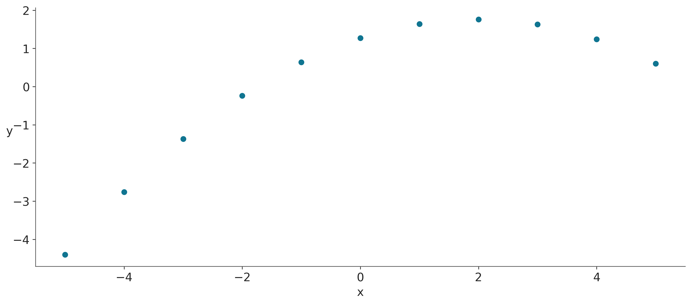
with pm.Model() as model_poly:
α = pm.Normal('α', mu=y_2.mean(), sigma=1)
β1 = pm.Normal('β1', mu=0, sigma=1)
β2 = pm.Normal('β2', mu=0, sigma=1)
ϵ = pm.HalfNormal('ϵ', 10)
mu = α + β1 * x_2 + β2 * x_2**2
y_pred = pm.Normal('y_pred', mu=mu, sigma=ϵ, observed=y_2)
idata_poly = pm.sample()Auto-assigning NUTS sampler...
Initializing NUTS using jitter+adapt_diag...
Multiprocess sampling (4 chains in 4 jobs)
NUTS: [α, β1, β2, ϵ]
100.00% [8000/8000 00:03<00:00 Sampling 4 chains, 0 divergences]
Sampling 4 chains for 1_000 tune and 1_000 draw iterations (4_000 + 4_000 draws total) took 3 seconds.Once again, we are going to omit some checks and summaries and just plot the results, a nice curved line fitting the data almost with no errors. Take into account the minimalistic nature of the dataset.
az.plot_trace(idata_poly);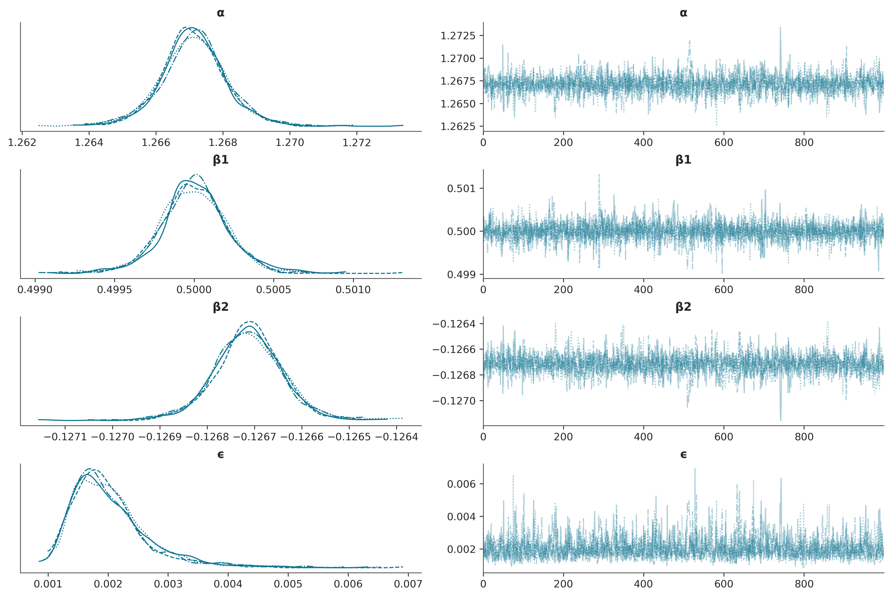
az.summary(idata_poly)| mean | sd | hdi_3% | hdi_97% | mcse_mean | mcse_sd | ess_bulk | ess_tail | r_hat | |
|---|---|---|---|---|---|---|---|---|---|
| α | 1.267 | 0.001 | 1.265 | 1.269 | 0.0 | 0.0 | 1857.0 | 1551.0 | 1.0 |
| β1 | 0.500 | 0.000 | 0.500 | 0.500 | 0.0 | 0.0 | 2638.0 | 1874.0 | 1.0 |
| β2 | -0.127 | 0.000 | -0.127 | -0.127 | 0.0 | 0.0 | 1911.0 | 1786.0 | 1.0 |
| ϵ | 0.002 | 0.001 | 0.001 | 0.003 | 0.0 | 0.0 | 1433.0 | 1578.0 | 1.0 |
x_p = np.linspace(-6, 6)
post_mean = idata_poly.posterior.mean(("chain", "draw"))
y_p = post_mean['α'].item() + post_mean['β1'].item() * x_p + post_mean['β2'].item() * x_p**2
plt.scatter(x_2, y_2)
plt.xlabel('x',)
plt.ylabel('y', rotation=0)
plt.plot(x_p, y_p, c='C1');
Interpretando los parámetros de una regresión polinomial
Uno de los problemas de la regresión polinómica es la interpretación de sus parámetros. Si queremos saber cómo cambia \(y\) por unidad de cambio de \(x\), no podemos simplemente verificar el valor de \(\beta_1\), ya que \(\beta_2\), y los coeficientes más altos (de estar presentes), tendrán un efecto en dicha cantidad. Entonces los coeficientes \(\beta\) ya no son pendientes, son otra cosa. En el ejemplo anterior, \(\beta_1\) es positivo y, por lo tanto, la curva comienza con una pendiente positiva, pero \(\beta_2\) es negativo y, por lo tanto, después de un tiempo, la línea comienza a curvarse hacia abajo. Es como si tuviéramos dos fuerzas en juego, una empujando la línea hacia arriba y la otra hacia abajo. La interacción depende del valor de \(x\). Cuando \(x \lessapprox 11\) (en la escala original, o 2 en la escala centrada), la contribución dominante proviene de \(\beta_1\), y cuando \(x \gtrapprox 11\), entonces \(\beta_2\) domina.
El principal problema de interpretar los parámetros en modelos polinomiales, es que en general los parámetros no se traducen a cantidades que tengan sentido a la luz de nuestro conocimiento de dominio. Es decir no podemos relacionarlos con la tasa metabólica de una célula, la energía emitida por una galaxia o el número de habitaciones en una casa. Los parámetros terminan siendo simplemente perillas que podemos manipular para mejorar el ajuste pero sin un significado claro. En la práctica, la mayoría de la gente suele estar de acuerdo en que los polinomios de orden superior a dos o tres generalmente no son modelos muy útiles y se prefieren alternativas, quizá como splines o los Procesos Gaussianos.
En este trabajo se propone una versión interpretable (y no lineal) de un polinomio de grado 2.
\[ \alpha_y - (\alpha_y - \alpha_0) \left(\frac{x_i}{\alpha_x} -1\right)^2 \] * \(\alpha_0\) : intercepto, valor de \(Y\) cuando \(x=0\) * \(\alpha_x\) : valor de \(x_i\) que maximiza/minimiza \(Y\) * \(\alpha_y\) : valor máximo/mínimo de \(Y\)
Varianza variable
Hemos estado usando el modelo lineal para modelar la media de una distribución, dejando la varianza de lado. En caso que consideremos que el supuesto de varianza constante no tiene sentido podemos considerar la varianza como una función (lineal) de la variable dependiente.
La Organización Mundial de la Salud y otras instituciones de salud de todo el mundo recopilan datos para recién nacidos y adultos mayores y diseñan estándares de gráficos de crecimiento. Estas tablas son un componente esencial del conjunto de herramientas pediátricas y también como una medida del bienestar general de las poblaciones con el fin de formular políticas de salud, planificar intervenciones y controlar su eficacia. Un ejemplo de tales datos son la longitud (alturas) de las niñas recién nacidas en función de la edad (en meses):
data = pd.read_csv('datos/babies.csv')
data.plot.scatter('Meses', 'Longitud');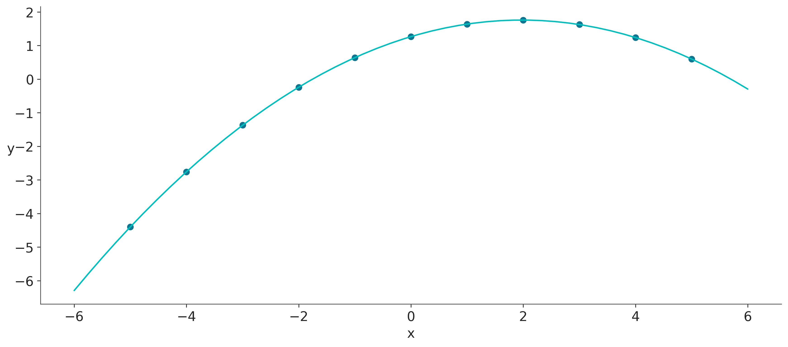
Para modelar estos datos, presentaremos 3 elementos nuevos en comparación con los modelos anteriores:
- \(\epsilon\) ahora es una función lineal de \(x\), y para hacer esto agregamos dos nuevos parámetros \(\gamma\) y \(\delta\), estos son análogos directos de \(\alpha\) y \(\beta\).
- El modelo lineal para la media es una función de \(\sqrt{x}\), esto es solo un truco simple para ajustar un modelo lineal a una curva.
- Hemos definido una variable compartida
x_shared, esto nos permitirá cambiar los valores de la variable \(x\) (Mesesen este ejemplo) sin la necesidad de volver a muestrear el modelo. Por qué hacemos estos será evidente pronto si tienen un poco de paciencia.
with pm.Model() as model_vv:
x_shared = pm.MutableData("x_shared", data.Meses.values.astype(float))
α = pm.Normal('α', sigma=10)
β = pm.Normal('β', sigma=10)
γ = pm.HalfNormal('γ', sigma=10)
δ = pm.HalfNormal('δ', sigma=10)
μ = pm.Deterministic('μ', α + β * x_shared**0.5)
ϵ = pm.Deterministic('ϵ', γ + δ * x_shared)
y_pred = pm.Normal('y_pred', mu=μ, sigma=ϵ, observed=data.Longitud)
idata_vv = pm.sample()Auto-assigning NUTS sampler...
Initializing NUTS using jitter+adapt_diag...
Multiprocess sampling (4 chains in 4 jobs)
NUTS: [α, β, γ, δ]
100.00% [8000/8000 00:03<00:00 Sampling 4 chains, 0 divergences]
Sampling 4 chains for 1_000 tune and 1_000 draw iterations (4_000 + 4_000 draws total) took 4 seconds.La siguiente figura muestra el resultado de nuestro modelo. La media de es \(\mu\) representada con una curva negra, y dos bandas turquesa semitransparentes representan 1 y 2 desviaciones estándar.
_, axes = plt.subplots(1, 2, figsize=(12, 4))
axes[0].plot(data.Meses, data.Longitud, 'C0.', alpha=0.1);
posterior = az.extract(idata_vv)
μ_m = posterior['μ'].mean("sample").values
ϵ_m = posterior['ϵ'].mean("sample").values
axes[0].plot(data.Meses, μ_m, c='k')
axes[0].fill_between(data.Meses, μ_m + 1 * ϵ_m, μ_m - 1 * ϵ_m, alpha=0.6, color='C1')
axes[0].fill_between(data.Meses, μ_m + 2 * ϵ_m, μ_m - 2 * ϵ_m, alpha=0.4, color='C1')
axes[0].set_xlabel('Meses')
axes[0].set_ylabel('Longitud');
axes[1].plot(data.Meses, ϵ_m)
axes[1].set_xlabel('Meses');
axes[1].set_ylabel(r'$\bar ϵ$', rotation=0);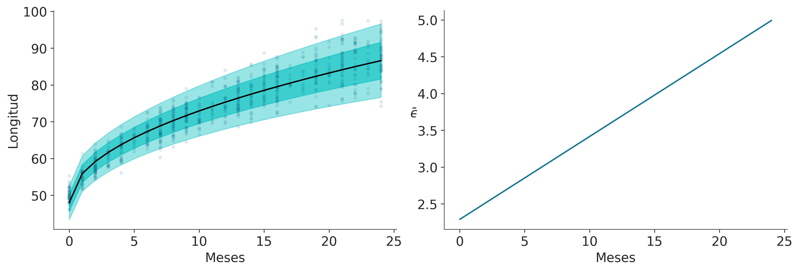
Ahora que tenemos ajustado el modelo podríamos querer averiguar cómo se compara la longitud de una niña en particular con el modelo. Una forma de responder a esta pregunta es preguntarle al modelo por la distribución de la variable longitud para bebas de digamos de 0.5 meses. Usando PyMC3 podemos hacer estas preguntas con la función sample_ppc, ya que esto arrojará muestras de \(\tilde y\) es decir los valores predichos considerando la incertidumbre de los parámetros. El único problema es que, por defecto, esta función devolverá valores de \(\tilde y\) para los valores observados de \(x\) y de 0,5 meses (el valor que me importa) no es parte de los datos originales. La manera más fácil de obtener predicciones para valores no observados es definir una variable compartida \(x\) (como parte del modelo) y luego actualizar el valor de la variable compartida justo antes del muestreo de la distribución predictiva a posteriori.
with model_vv:
pm.set_data({"x_shared": [0.5]})
ppc = pm.sample_posterior_predictive(idata_vv)
y_ppc = ppc.posterior_predictive['y_pred'].stack(sample=("chain", "draw"))Sampling: [y_pred]
100.00% [4000/4000 00:00<00:00]
Ahora podemos graficar la distribución esperada de las longitudes para las bebas con 2 semanas de vida y calcular cantidades adicionales, por ejemplo, el percentil de un niño para su longitud:
ref = 52.5
grid, pdf = az.stats.density_utils._kde_linear(y_ppc.values)
plt.plot(grid, pdf)
percentile = int((y_ppc <= ref).mean() * 100)
plt.fill_between(grid[grid < ref], pdf[grid < ref], label='percentil = {:2d}'.format(percentile))
plt.xlabel('longitud')
plt.yticks([])
plt.legend();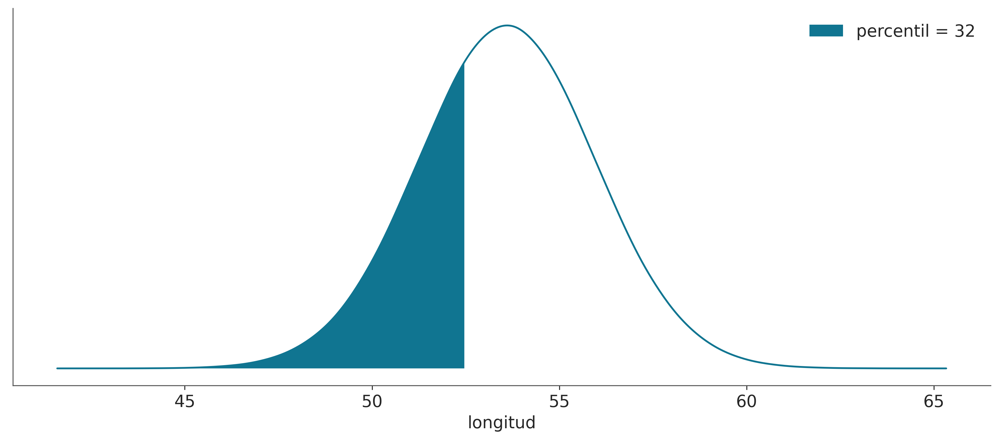
Modelos lineales generalizados
Hasta el momento hemos asumido que la variable dependiente puede variar, a priori, sin restricciones y por ello usamos como likelihood una Gaussiana (o una generalización de esta como lo es la t de Student). Pero que podemos hacer si la variable respuesta está restringida a ser positiva, o discreta, o en el intervalo [0, 1], etc. Usando software como PyMC bastaría con cambiar el likelihood de una Gaussiana a una Poisson (o lo que haga falta), pero si solo hacemos eso tendremos problemas, ya que la combinación lineal de parámetros podría dar valores fuera del rango permitido (por ej negativos). Para subsanar este problema podemos aplicar una función a la combinación lineal de variables de entrada, algo como:
\[\mu = f(\alpha + X \beta) \tag{4.1}\]
donde \(f\) es lo que se conoce como función inversa de enlace. Hay una gran variedad de funciones inversas de enlace que podemos elegir, probablemente la más simple sea la función identidad. Esta es una función que devuelve el mismo valor utilizado como argumento. Todos los modelos del capítulo anterior usaron la función de identidad, y por simplicidad simplemente la omitimos. La función de identidad puede no ser muy útil en sí misma, pero nos permite pensar en varios modelos diferentes de una manera unificada.
¿Por qué llamamos a \(f\) función inversa de enlace en lugar de llamarla simplemente función de enlace? La razón es histórica. Tradicionalmente las personas aplican funciones al otro lado de la ecuación \(4.1\), y llaman a esas funciones funciones de enlace, por lo tanto, para evitar confusiones, nos apegaremos al término función inveras de enlace.
Veamos algunos ejemplos concretos de modelos lineales generalizados
Regresión logística
La regresión logistica es la generalización del modelo de regresión que vimos en el capítulo pasado para cuando la variable dependiente es binaria. Esta generalización se logra en dos pasos. Primero reemplazamos \(f\) en \(4.1\) por la función logística:
\[ \text{logística}(z) = \frac{1}{1 + e^{-z}} \tag{4.2}\]
Usamos esta función por que una de sus propiedades es que no importa el valor del argumento \(z\), el resultado siempre será un valor en el intervalo [0-1]. La función logística es conocida también como función sigmoide, por su aspecto típico de S como se puede ver al ejecutar la siguiente celda:
z = np.linspace(-6, 6)
logística = 1 / (1 + np.exp(-z))
plt.plot(z, logística)
plt.xlabel('z')
plt.ylabel('logística(z)');
El segundo paso consiste en usar como likelihood una distribución binomial y no una Gaussiana. De esta forma el modelo queda expresado como:
\[ \theta = logistic(\alpha + x\beta) \\ y = \text{Bern}(\theta) \tag{4.3} \]
Esto modelo se puede motivar de la siguiente forma. Si nuestros datos son binarios \(y \in \{0, 1\}\), como con el ejemplo de la moneda o el diagnóstico, vemos que tiene sentido usar una distribución bernoulli. Esta distribución está parametrizada por un único parámetro en el intervalo [0, 1], el cual puede ser generado desde un modelo lineal siempre y cuando los valores generados por el modelo lineal sean comprimidos al intervalo [0, 1], algo que puede ser obtenido al emplear una función logística.
Usando un diagrama de Kruschke una regresión logística con priors Gaussianos:

El conjunto de datos del Iris
Vamos a aplicar una regresión logística al conjunto de datos Iris. Este es un conjunto de datos clásico que contiene información sobre flores de 3 especies estrechamente relacionadas: setosa, virginica y versicolor. Estas serán nuestras variables dependientes, las clases que queremos predecir. Tenemos 50 individuos de cada especie y para cada individuo el conjunto de datos contiene cuatro variables (o features) que vamos a usar como variables independientes. Estas son el largo del pétalo, el ancho del pétalo, el largo del sépalo y el ancho del sépalo. Por si se lo están preguntando, los sépalos son hojas modificadas, cuya función está generalmente relacionada con la protección de las flores en la yema.
Podemos cargar un DataFrame con el conjunto de datos del iris haciendo:
iris = pd.read_csv('datos/iris.csv')
iris.head()| sepal_length | sepal_width | petal_length | petal_width | species | |
|---|---|---|---|---|---|
| 0 | 5.1 | 3.5 | 1.4 | 0.2 | setosa |
| 1 | 4.9 | 3.0 | 1.4 | 0.2 | setosa |
| 2 | 4.7 | 3.2 | 1.3 | 0.2 | setosa |
| 3 | 4.6 | 3.1 | 1.5 | 0.2 | setosa |
| 4 | 5.0 | 3.6 | 1.4 | 0.2 | setosa |
Ahora graficaremos las 3 especies versus la longitud del sépalo usando la función stripplot de seaborn:
sns.stripplot(x="species", y="sepal_length", data=iris, hue="species", jitter=True, legend=False);
Observe en la figura 4.2 que en el eje y se representan una variable continua mientras que en el eje x la variable es categórica. La dispersión (o jitter) de los puntos a lo largo del eje x no tiene ningún significado, y es solo un truco para evitar que todos los puntos colapsen en una sola línea (pueden probar pasando el argumento jitter=False). Por lo tanto lo único que importa al leer el eje x es la pertenencia de los puntos a las clases setosa, versicolor o virginica.
Otra forma de inspeccionar los datos es haciendo una matriz de dispersión con la función pairplot. En la figura 4.3 podemos ver una matriz de \(4 \times 4\), ya que tenemos 4 variables independientes (o features). La matriz es simétrica con los triángulos superior e inferior conteniendo la misma información. En la diagonal principal en vez de tener una gráfico de dispersión de una variable contra si misma (lo cual no es informativo) tenemos un KDE de cada feature para cada especie (o clase). Cada especie está representada usando un color particular.
sns.pairplot(iris, hue='species', plot_kws={"legend":False});/home/osvaldo/anaconda3/envs/bayes/lib/python3.9/site-packages/seaborn/axisgrid.py:118: UserWarning: This figure was using constrained_layout, but that is incompatible with subplots_adjust and/or tight_layout; disabling constrained_layout.
self._figure.tight_layout(*args, **kwargs)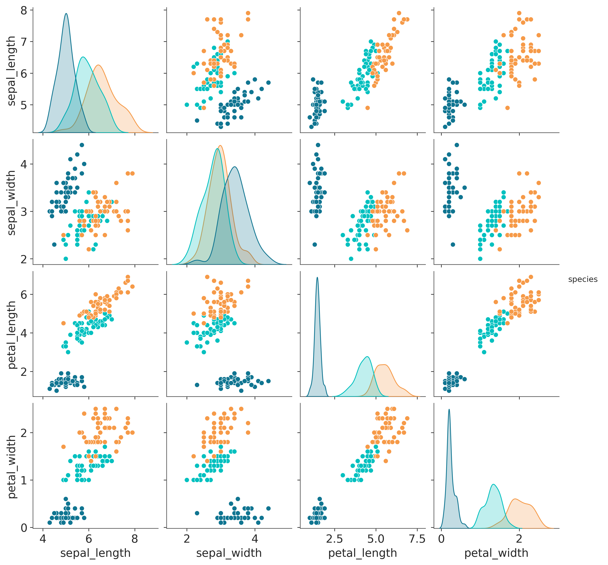
Antes de continuar, tómese un tiempo para estudiar las gráficas anteriores y familiarizarse con el conjunto de datos y cómo se relacionan las variables dependientes y las independientes.
El modelo logístico aplicado al conjunto de datos del iris.
Vamos a comenzar con la regresión logística más simple posible: dos clases, setosa y versicolor, y solo una variable independiente, la longitud del sépalo. Como se hace normalmente, vamos a codificar las variables categóricas setosa y versicolor con los números 0 y 1. Usando Pandas podemos hacer:
df = iris.query("species == ('setosa', 'versicolor')")
y_0 = pd.Categorical(df['species']).codes
x_n = 'sepal_length'
x_0 = df[x_n].values
x_c = x_0 - x_0.mean()Al igual que con otros modelos lineales, centrar los datos puede ayudar con el muestreo. Ahora que tenemos los datos en el formato adecuado, finalmente podemos construir el modelo con PyMC.
Observe cómo la primera parte del siguiente modelo se asemeja a un modelo de regresión lineal. Este modelo tiene dos variables deterministas: θ ybd. θ es la salida de la función logística aplicada a la variable μ y bd es límite de decisión (el cual explicaremos más adelante).Otro punto que vale la pena mencionar es que en lugar de escribir explícitamente la función logística estamos usando pm.math.sigmoid (esto es un alias para una función de Theano).
with pm.Model() as modelo_0:
α = pm.Normal('α', mu=0, sigma=10)
β = pm.Normal('β', mu=0, sigma=10)
μ = α + pm.math.dot(x_c, β)
θ = pm.Deterministic('θ', pm.math.sigmoid(μ))
bd = pm.Deterministic('bd', -α/β)
yl = pm.Bernoulli('yl', p=θ, observed=y_0)
idata_0 = pm.sample()Auto-assigning NUTS sampler...
Initializing NUTS using jitter+adapt_diag...
Multiprocess sampling (4 chains in 4 jobs)
NUTS: [α, β]
100.00% [8000/8000 00:01<00:00 Sampling 4 chains, 0 divergences]
Sampling 4 chains for 1_000 tune and 1_000 draw iterations (4_000 + 4_000 draws total) took 1 seconds.Como es habitual, también mostramos el summary del posterior. Más adelante, compararemos el valor que obtengamos para el límite de decisión con un valor calculado utilizando otro método.
az.plot_trace(idata_0, var_names='~θ');
az.summary(idata_0, var_names='~θ')| mean | sd | hdi_3% | hdi_97% | mcse_mean | mcse_sd | ess_bulk | ess_tail | r_hat | |
|---|---|---|---|---|---|---|---|---|---|
| α | 0.300 | 0.332 | -0.322 | 0.907 | 0.006 | 0.005 | 3040.0 | 2833.0 | 1.0 |
| β | 5.376 | 1.064 | 3.511 | 7.416 | 0.020 | 0.014 | 3087.0 | 2711.0 | 1.0 |
| bd | -0.055 | 0.061 | -0.169 | 0.060 | 0.001 | 0.001 | 3104.0 | 2881.0 | 1.0 |
Ahora vamos a graficar los datos junto con la curva sigmoide ajustada:
_, ax = plt.subplots(figsize=(10, 6))
post_0 = az.extract(idata_0)
theta = post_0['θ'].mean("sample")
idx = np.argsort(x_c)
ax.plot(x_c[idx], theta[idx], color='C8', lw=3)
ax.vlines(post_0['bd'].mean("sample"), 0, 1, color='k')
bd_hdi = az.hdi(post_0.unstack())["bd"]
ax.fill_betweenx([0, 1], bd_hdi[0], bd_hdi[1], color='k', alpha=0.5)
ax.scatter(x_c, np.random.normal(y_0, 0.02), marker='.', color=[f'C{x}' for x in y_0])
theta_hdi = az.hdi(post_0.unstack())['θ'][idx]
ax.fill_between(x_c[idx], theta_hdi[:,0], theta_hdi[:,1], color='C8', alpha=0.5)
ax.set_xlabel(x_n)
ax.set_ylabel('θ', rotation=0, labelpad=20)
# use original scale for xticks
locs, _ = plt.xticks()
ax.set_xticks(locs, np.round(locs + x_0.mean(), 1));
La figura anterior muestra la longitud del sépalo para las especies (setosa = 0, versicolor = 1). Para mitigar la superposición de los datos, hemos agregado ruido (jitter) a las variable-respuesta que es binaria. Una línea púrpura en forma de S representa el valor medio de \(\theta\). Esta línea se puede interpretar como la probabilidad que una flor sea versicolor dado el valor de la longitud del sépalo. La banda púrpura semitransparente es el intervalo del 94% de HDI. Esta figura nos muestra que podemos interpretar la regresión logística como una forma de combinar variables linealmente a fin de obtener una probabilidad para variables binarias.
Alternativamente podemos usar una regresión logística para clasificar, esto lo podemos hacer discretizando el valor de probabilidad obtenido. El caso más común es asignar la clase 1 si la probabilidad es mayor a 0.5 y asignar la clase 0 en caso contrario. En la figura 4.4 hemos graficado este límite de decisión usando una línea vertical negra junto con su 94% HDI (la banda gris). De acuerdo con el límite de decisión, los valores \(x_i\) (longitud del sépalo en este caso) a la izquierda corresponden a la clase 0 (setosa) y los valores a la derecha a la clase 1 (versicolor).
El límite de decisión se define como el valor de \(x_i\), para el cual \(y = 0.5\). Y resulta ser $- $, como podemos comprobar a continuación:
A partir de la definición del modelo tenemos la relación:
\[\theta = logistic(\alpha + x \beta) \tag{4.4}\]
Y a partir de la definición de la función logística tenemos que $= 0.5 $, cuando el argumento de la regresión logística es 0, es decir:
\[0.5 = logística(\alpha + x_i \beta) \Leftrightarrow 0 = \alpha + x_i \beta \tag{4.5}\]
Reordenando 4.5, encontramos que el valor de \(x_i\), para el cual, \(\theta = 0.5\) corresponde a la expresión:
\[x_i = - \frac{\alpha}{\beta} \tag{4.6}\]
Resumiendo los puntos más importantes hasta el momento:
El valor de \(\theta\) es, en términos generales, $p(y= 1 x) $. En este sentido, la regresión logística es en realidad una regresión, solo que estamos regresionando la probabilidad de que un punto de datos pertenezca a la clase 1, dada una combinación lineal de características.
Estamos modelando la media de una variable dicotómica, es decir, un número en el intervalo [0-1]. Luego, introducimos una regla para convertir esta probabilidad en una asignación de dos clases. En este caso, si $p(y = 1) >= 0.5 $ asignamos clase 1, de lo contrario clase 0.
No hay nada especial en el valor 0.5, aparte de que es el número en el medio entre 0 y 1. Podemos argumentar que este límite solo es razonable si estamos de acuerdo en cometer un error en una u otra dirección. En otras palabras, si es lo mismo para nosotros clasificar erróneamente una setosa como versicolor o una versicolor como setosa. Resulta que este no es siempre el caso, y el costo asociado a la clasificación errónea no tiene por qué ser simétrico, como recordarán del capítulo 2 cuando analizamos las funciones de pérdida.
Regresión logística múltiple
De manera similar a la regresión lineal múltiple, la regresión logística múltiple consiste en utilizar más de una variable independiente. Intentemos combinar la longitud del sépalo y el ancho del sépalo. Recuerda que necesitamos preprocesar un poco los datos.
df = iris.query("species == ('setosa', 'versicolor')")
y_1 = pd.Categorical(df['species']).codes
x_n = ['sepal_length', 'sepal_width']
#x_n = ['petal_length', 'petal_width']
x_1 = df[x_n].valuesEl límite de decisión
No dudes en omitir esta sección y pasar directamente a la implementación del modelo si no estás demasiado interesado en cómo podemos obtener el límite de decisión.
Desde el modelo, tenemos:
\[\theta = logística(\alpha + \beta_1 x_1 + \beta_2 x_2) \tag{4.7}\]
Y a partir de la definición de la función logística, tenemos que \(\theta = 0.5\), cuando el argumento de la regresión logística es cero, es decir:
\[ 0.5 = logística(\alpha + \beta_1x_1 + \beta_2x_2) \Leftrightarrow 0 = \alpha + \beta_1x_1 + \beta_2x_2 \tag {4.8}\]
Reordenando, encontramos el valor de \(x_2\) para el cual \(\theta = 0.5\) el cual corresponde a la expresión:
\[ x_2 = -\frac{\alpha}{\beta_2} + \left (-\frac{\beta_1}{\beta_2} x_1 \right) \tag {4.9}\]
Esta expresión para el límite de decisión tiene la misma forma matemática que la ecuación de una línea, siendo el primer término el intercepto y el segundo la pendiente. Los paréntesis se utilizan para mayor claridad y podemos omitirlos si queremos. Que el límite sea una línea es totalmente razonable, ¿no es así? Si tenemos una sola variable, tenemos datos unidimensionales y podemos dividirla en dos grupos usando un punto; si tenemos dos variables, tenemos un espacio de datos bidimensional y podemos separarlo usando una línea; para las tres dimensiones, el límite será un plano y para dimensiones más altas hablaremos genéricamente acerca de los hiperplanos. Bueno, en realidad siempre podemos hablar de hyperplanos n-dimensionales.
Implementando el modelo
Para escribir el modelo de regresión logística múltiple utilizando PyMC, aprovechamos sus capacidades de vectorización, lo que nos permite introducir solo modificaciones menores respecto del modelo logístico simple:
with pm.Model() as modelo_1:
α = pm.Normal('α', mu=0, sigma=10)
β = pm.Normal('β', mu=0, sigma=2, shape=len(x_n))
μ = α + pm.math.dot(x_1, β)
θ = pm.Deterministic('θ', pm.math.sigmoid(μ))
bd = pm.Deterministic('bd', -α/β[1] - β[0]/β[1] * x_1[:,0])
yl = pm.Bernoulli('yl', p=θ, observed=y_1)
idata_1 = pm.sample(2000)Auto-assigning NUTS sampler...
Initializing NUTS using jitter+adapt_diag...
Multiprocess sampling (4 chains in 4 jobs)
NUTS: [α, β]
100.00% [12000/12000 00:10<00:00 Sampling 4 chains, 0 divergences]
Sampling 4 chains for 1_000 tune and 2_000 draw iterations (4_000 + 8_000 draws total) took 10 seconds.varnames = ['α', 'β']
az.plot_forest(idata_1, var_names=varnames, figsize=(10, 3));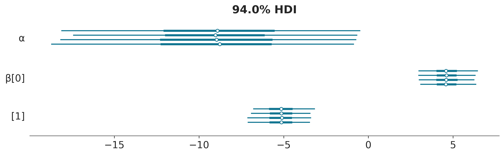
Como hicimos para una única variable predictiva, vamos a graficar los datos y el límite de decisión.
_, ax = plt.subplots(figsize=(10, 6))
idx = np.argsort(x_1[:,0])
bd = idata_1.posterior['bd'].mean(("chain", "draw"))[idx]
plt.scatter(x_1[:,0], x_1[:,1], c=[f'C{x}' for x in y_0])
plt.plot(x_1[:,0][idx], bd, color='k');
az.plot_hdi(x_1[:,0], idata_1.posterior['bd'], color="C8")
ax.set_xlabel(x_n[0])
ax.set_ylabel(x_n[1]);
El límite de decisión es una línea recta, como ya hemos visto. No se confunda con el aspecto curvo de la banda del 94% de HDI. La curvatura aparente es el resultado de tener múltiples líneas que giran alrededor de una región central (aproximadamente alrededor de la media de x y la media de y).
Interpretación de los coeficientes de una regresión logística
Debemos tener cuidado al interpretar los coeficientes \(\beta\) de una regresión logística. La interpretación no es tan sencilla como con los modelos lineales en el capítulo anterior. La función logística introduce una no linearidad, que debemos tener en cuenta. Si \(\beta\) es positivo, aumentar \(x\) aumentará \(p(y = 1)\) en cierta cantidad, pero la cantidad no es una función lineal de \(x\), es en cambio una función no-lineal de \(x\). Podemos visualizar este hecho en la figura 4.4, en lugar de una línea con una pendiente constante, tenemos una línea en forma de S con una pendiente que cambia en función de \(x\). Un poco de álgebra nos puede dar una idea de cuánto cambia \(p(y=1)\) con \(\beta\):
El modelo logístico básico es:
\[\theta = logistic (\alpha + X \beta) \tag{4.11} \]
El inverso de la logística es la función logit, que es:
\[ logit(z) = log \left (\frac{z}{1-z} \right) \tag{4.12}\]
Por lo tanto, si tomamos la primera ecuación en esta sección y aplicamos la función logit a ambos términos, obtenemos:
\[ logit(\theta) = \alpha + X \beta \tag{4.13}\]
O equivalente:
\[ log \left (\frac{\theta} {1-\theta} \right) = \alpha + X \beta \tag {4.14}\]
Recuerden que \(\theta\) en nuestro modelo era la probabilidad de $y = 1 $, por lo tanto:
\[ log \left(\frac {p(y = 1)} {1-p (y = 1)} \right) = \alpha + X \beta \tag {4.15} \]
La cantidad \[\frac{p (y = 1)} {1-p (y = 1)}\] se conoce como odds. Los odds a favor se definen como la relación entre la probabilidad de éxito y la probabilidad de no éxito. Mientras que la probabilidad de obtener 2 tirando un dado es 1/6, los odds para el mismo evento son \(\frac{1/6}{5/6} \simeq 0.2\) o dicho de otra forma 1 evento favorable frente a 5 eventos desfavorables. Los odds suelen ser utilizadas por los apostadores ya que proporcionan una herramienta más intuitiva que las probabilidades en bruto cuando se piensa en la forma correcta de apostar.
En una regresión logística, el coeficiente \(\beta\) codifica el aumento en unidades de log-odds por unidad de aumento de la variable \(x\).
La transformación de probabilidad a odds es una transformación monotónica, lo que significa que las probabilidades aumentan a medida que aumenta la probabilidad. Mientras que las probabilidades están restringidas al intervalo \([0, 1]\), los odds viven en el intervalo \([0, \infty]\). El logaritmo es otra transformación monótonica y los log-odds están en el intervalo \([-\infty, \infty]\). La figura 4.6 muestra cómo la probabilidad está relacionada con los odds y los log-odds.
probability = np.linspace(0.01, 1, 100)
odds = probability / (1 - probability)
_, ax1 = plt.subplots()
ax2 = ax1.twinx()
ax1.plot(probability, odds, 'C0')
ax2.plot(probability, np.log(odds), 'C2')
ax1.set_xlabel('probabilidad')
ax1.set_ylabel('odds', color='C0')
ax2.set_ylabel('log-odds', color='C2');/tmp/ipykernel_16695/2677285095.py:2: RuntimeWarning: divide by zero encountered in divide
odds = probability / (1 - probability)
Por lo tanto, los valores de los coeficientes proporcionados por summary están en la escala log-odds.
df = az.summary(idata_1, var_names=['α', 'β'])
df| mean | sd | hdi_3% | hdi_97% | mcse_mean | mcse_sd | ess_bulk | ess_tail | r_hat | |
|---|---|---|---|---|---|---|---|---|---|
| α | -9.019 | 4.745 | -18.156 | -0.685 | 0.089 | 0.066 | 2918.0 | 3083.0 | 1.0 |
| β[0] | 4.642 | 0.909 | 3.036 | 6.413 | 0.018 | 0.013 | 2672.0 | 2638.0 | 1.0 |
| β[1] | -5.179 | 0.980 | -6.955 | -3.279 | 0.018 | 0.013 | 2907.0 | 2779.0 | 1.0 |
Una forma muy empírica de entender los modelos es cambiar los parámetros y ver qué sucede. En el siguiente bloque de código, calculamos las log-odds en favor de versicolor como \(\text {log_odds_versicolor_i} = \alpha + beta_1 x1 + \beta_2 x2\), y luego la probabilidad de versicolor con la función logística. Luego repetimos el cálculo arreglando \(x_2\) y aumentando \(x_1\) en 1.
x_1 = 4.5 # sepal_length
x_2 = 3 # sepal_width
log_odds_versicolor_i = (df['mean'] * [1, x_1, x_2]).sum()
probability_versicolor_i = logistic(log_odds_versicolor_i)
log_odds_versicolor_f = (df['mean'] * [1, x_1 + 1, x_2]).sum()
probability_versicolor_f = logistic(log_odds_versicolor_f)
(f'{log_odds_versicolor_f - log_odds_versicolor_i:.2f}',
f'{probability_versicolor_f - probability_versicolor_i:.2f}')('4.64', '0.70')Si ejecutas el código, encontrarás que el aumento en las log-odds es de \(\approx 4.7\), que es exactamente el valor de \(\beta_0\) (verifique el summary para trace_1). Esto está en línea con nuestro hallazgo anterior que muestra que los coeficientes \(\beta\) indican el aumento en unidades log-odds por incremento unitario de la variable \(x\). El aumento en la probabilidad es \(\approx 0.70\).
Trabajando con variables correlacionadas
Sabemos por el capítulo anterior que trabajar con variables muy correlacionadas puede traernos problemas. Las variables correlacionadas se traducen en combinaciones más amplias de coeficientes que explican los datos o, desde el punto de vista complementario, variables correlacioadas tienen menos poder para restringir los modelos. Un problema similar ocurre cuando las clases se vuelven perfectamente separables, es decir, no hay superposición entre clases dada la combinación lineal de variables en nuestro modelo. Podemos visualizar un ejemplo de esto al usar el conjunto de datos iris con el modelo_1, pero esta vez utilizando las variables ancho de pétalo y largo de pétalo. Encontraras que los coeficientes \(\beta\) son más amplios que antes y también el 94% HDI (banda gris en la figura 4.5) es mucho más amplia. La figura 4.7 muestra un heatmap para las variables sepal_length y sepal_width (usadas en el primer ejemplo) la correlación no es tan alta como la correlación entre las variables petal_length y petal_width (usada en el segundo ejemplo).
corr = iris[iris['species'] != 'virginica'].corr()
mask = np.tri(*corr.shape).T
sns.heatmap(corr.abs(), mask=mask, annot=True, cmap='viridis');
Para generar la figura 4.7, hemos utilizado una máscara que elimina el triángulo superior y los elementos diagonales del heatmap, ya que estos son poco informativos o redundantes. Observe también que hemos graficado el valor absoluto de la correlación, ya que en este momento no nos importa el signo de la correlación entre las variables, solo su fuerza.
Una solución cuando se trabaja con variables (altamente) correlacionadas, es simplemente eliminar una (o más de una) de las variables correlacionadas. Otra opción es poner más información en el a priori, esto se puede lograr con a prioris informativos si es que contamos con información previa útil, o más general utilizando a prioris ligeramente informativos. Andrew Gelman y el equipo de Stan recomiendan usar el siguiente a priori al realizar una regresión logística:
\[ \beta \sim Student t (0, \nu, sd) \tag {4.10}\]
donde sd se elije de forma que informe débilmente sobre los valores esperados para la escala. Se sugiere que el parámetro de normalidad \(\nu\) sea alrededor de 3-7. Lo que dice este a priori es que esperamos que el coeficiente sea pequeño, pero ponemos colas pesadas porque esto nos lleva a un modelo más robusto que el uso de una distribución gaussiana.
Tratando con clases desequilibradas
El conjunto de datos del iris está completamente equilibrado; en el sentido de que cada categoría tiene exactamente el mismo número de observaciones. Tenemos 50 setosas, 50 versicolores, y 50 virgininas. Por el contrario, muchos conjuntos de datos constan de datos no balanceados, es decir, hay muchos más datos de una clase que de la otra. Cuando esto sucede, la regresión logística puede generar problemas, es decir, el límite no se puede determinar con la misma precisión que cuando el conjunto de datos está más equilibrado.
Para ver un ejemplo de este comportamiento, vamos a usar el conjunto de datos del iris y vamos a eliminar arbitrariamente algunos puntos de datos de la clase setosa:
df = iris.query("species == ('setosa', 'versicolor')")
df = df[45:]
y_3 = pd.Categorical(df['species']).codes
x_n = ['sepal_length', 'sepal_width']
x_3 = df[x_n].valuesY ahora ejecutamos una regresión logística múltiple, tal cual hicimos antes.
with pm.Model() as modelo_3:
α = pm.Normal('α', mu=0, sigma=10)
β = pm.Normal('β', mu=0, sigma=2, shape=len(x_n))
μ = α + pm.math.dot(x_3, β)
θ = pm.math.sigmoid(μ)
bd = pm.Deterministic('bd', -α/β[1] - β[0]/β[1] * x_3[:,0])
yl = pm.Bernoulli('yl', p=θ, observed=y_3)
idata_3 = pm.sample()Auto-assigning NUTS sampler...
Initializing NUTS using jitter+adapt_diag...
Multiprocess sampling (4 chains in 4 jobs)
NUTS: [α, β]
100.00% [8000/8000 00:05<00:00 Sampling 4 chains, 0 divergences]
Sampling 4 chains for 1_000 tune and 1_000 draw iterations (4_000 + 4_000 draws total) took 6 seconds.El límite de decisión se desplaza hacia la clase menos abundante y la incertidumbre es más grande que antes. Este es el comportamiento típico de un modelo logístico para datos no balanceados. ¡Pero espera un minuto! Bien podrías argumentar que te estoy engañando ya que la mayor incertidumbre es en realidad el producto de tener menos datos y no solo menos setosas que versicolores. Este es un punto totalmente válido, pero si realizas el ejercicio 2 podrás verificar que lo que explica esta gráfica son los datos desequilibrados.
idx = np.argsort(x_3[:,0])
bd = idata_3.posterior['bd'].mean(("chain", "draw"))[idx]
plt.scatter(x_3[:,0], x_3[:,1], c= [f'C{x}' for x in y_3])
plt.plot(x_3[:,0][idx], bd, color='C8');
bd_hdi = az.hdi(idata_3.posterior)['bd'][idx]
plt.fill_between(x_3[:,0][idx], bd_hdi[:,0], bd_hdi[:,1], color='C8', alpha=0.5);
plt.xlabel(x_n[0])
plt.ylabel(x_n[1]);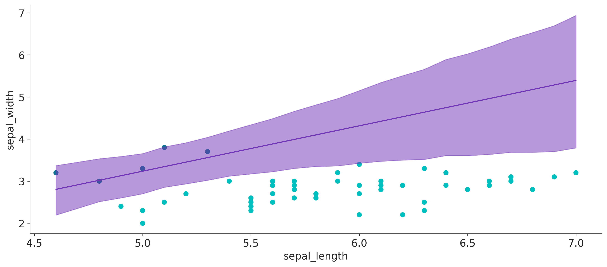
¿Qué hacer si encontramos datos desequilibrados? Bueno, la solución obvia es obtener un conjunto de datos con aproximadamente la misma cantidad por clase. Este es un punto a tener en cuenta al recopilar o generar los datos. Si no tenés control sobre el conjunto de datos, debes tener cuidado al interpretar los resultados para datos no balanceados. Verifique la incertidumbre del modelo y ejecute algunas verificaciones predictivas posteriores para ver si los resultados son útiles para usted. Otra opción sería utilizar priors más informativos y/o ejecutar un modelo alternativo como se explica más adelante en este capítulo.
Regresión softmax (o multinomial)
Una forma de generalizar la regresión logística a más de dos clases es con la regresión softmax. Necesitamos introducir 2 cambios con respecto a la regresión logística, primero reemplazamos la función logística con la función softmax:
\[softmax (\mu_i) = \frac {exp (\mu_i)} {\sum exp (\mu_k)} \tag{4.16}\]
En palabras, para obtener la salida de la función softmax para el i-esimo elemento de un vector \(\mu\), tomamos la exponencial del valor i-esimo dividido por la suma de todos los valores del vector \(\mu\) exponenciados.
La función softmax garantiza que obtendremos valores positivos que suman 1. La función softmax se reduce a la función logística cuando \(k=2\). Como nota al margen, la función softmax tiene la misma forma que la distribución de Boltzmann, distribución central en la mecánica estadística, una rama muy poderosa de la física que se ocupa de la descripción probabilística de los sistemas atómicos y moleculares. La distribución de Boltzmann (y a veces la función softmax) incluye un parámetro llamado temperatura (T) que divide \(\mu\); cuando $ T $ la distribución de probabilidad se vuelve plana y todos los estados son igualmente probables, y cuando \(T \rightarrow 0\) solo se llena el estado más probable y, por lo tanto, el softmax se comporta como la función máximo.
El segundo cambio en la regresión softmax es que reemplazamos la distribución de Bernoulli por la distribución categórica. La distribución categórica es la generalización de Bernoulli a más de dos resultados. Además, como la distribución de Bernoulli (tirada de una sola moneda) es un caso especial de la Binomial (tiradas de \(n\) monedas), la categórica (tirada de un dado de \(k\) caras) es un caso especial de la distribución multinomial (\(n\) tiradas de un dado de \(k\) caras).
k-diagram
Para ejemplificar la regresión de softmax, continuaremos trabajando con el conjunto de datos iris, solo que esta vez usaremos sus 3 clases (setosa, versicolor y virginica) y sus cuatro características (largo sépalo, ancho sépalo, longitud del pétalo y ancho del pétalo). También vamos a estandarizar los datos, ya que esto ayudará a que el sampler se ejecute de manera más eficiente (también podríamos centrar los datos):
y_s = pd.Categorical(iris['species']).codes
x_n = iris.columns[:-1]
x_s = iris[x_n].values
x_s = (x_s - x_s.mean(axis=0)) / x_s.std(axis=0)El código de PyMC refleja los pocos cambios entre el modelo logístico y el modelo softmax. Presta atención a los valores de shape para los coeficientes $$ y \(\beta\). En el siguiente código usamos la función softmax de Theano. Hemos utilizado la expresión import theano.tensor as tt, que es la convención utilizada por los desarrolladores de PyMC:
with pm.Model() as modelo_s:
α = pm.Normal('α', mu=0, sigma=5, shape=3)
β = pm.Normal('β', mu=0, sigma=5, shape=(4,3))
μ = pm.Deterministic('μ', α + pm.math.dot(x_s, β))
θ = pm.math.softmax(μ)
yl = pm.Categorical('yl', p=θ, observed=y_s)
idata_s = pm.sample()Auto-assigning NUTS sampler...
Initializing NUTS using jitter+adapt_diag...
Multiprocess sampling (4 chains in 4 jobs)
NUTS: [α, β]
100.00% [8000/8000 00:27<00:00 Sampling 4 chains, 0 divergences]
Sampling 4 chains for 1_000 tune and 1_000 draw iterations (4_000 + 4_000 draws total) took 28 seconds.az.plot_forest(idata_s, var_names=['α', 'β'], figsize=(10, 4), combined=True);
¿Qué tan bien funciona nuestro modelo? Averigüemos cuántos casos podemos predecir correctamente. En el siguiente código, solo usamos la media de los parámetros para calcular la probabilidad de que cada punto de datos pertenezca a cada una de las tres clases, luego asignamos la clase usando la función argmax. Y comparamos el resultado con los valores observados:
data_pred = idata_s.posterior['μ'].mean(("chain", "draw"))
y_pred = [np.exp(point)/np.sum(np.exp(point), axis=0) for point in data_pred]
f'{np.sum(y_s == np.argmax(y_pred, axis=1)) / len(y_s):.2f}''0.95'El resultado es que clasificamos correctamente \(\approx 95 \%\) de los datos. Ese es realmente un muy buen trabajo. Sin embargo, una verdadera prueba para evaluar el rendimiento de nuestro modelo sería verificarlo con un conjunto de datos no usado para ajustar al modelo. De lo contrario, es posible que estemos sobreestimando la capacidad real del modelo para generalizar a otros datos.
Es posible que hayas notado que las distribuciones marginales de cada parámetro son muy amplias. Este es el mismo problema de no identificabilidad que ya hemos encontrado para los datos correlacionados en otros modelos de regresión o con clases perfectamente separables. En este caso, el ancho posterior se debe a la condición de que todas las probabilidades deben sumar 1. Dada esta condición, estamos usando más parámetros de los que necesitamos para especificar completamente el modelo. En términos simples, si tenés 10 números que suman 1, solo necesitás darme 9 de ellos; el otro puedo calcularlo. Esto es precisamente lo que está pasando con este problema. Una solución es fijar los parámetros extra a algún valor, por ejemplo, cero. El siguiente código muestra cómo lograr esto usando PyMC:
with pm.Model() as modelo_sf:
α = pm.Normal('α', mu=0, sigma=2, shape=2)
β = pm.Normal('β', mu=0, sigma=2, shape=(4,2))
α_f = pm.math.concatenate([[0] ,α])
β_f = pm.math.concatenate([np.zeros((4,1)) , β], axis=1)
μ = α_f + pm.math.dot(x_s, β_f)
θ = pm.math.softmax(μ)
yl = pm.Categorical('yl', p=θ, observed=y_s)
idata_sf = pm.sample()Auto-assigning NUTS sampler...
Initializing NUTS using jitter+adapt_diag...
Multiprocess sampling (4 chains in 4 jobs)
NUTS: [α, β]
100.00% [8000/8000 00:08<00:00 Sampling 4 chains, 0 divergences]
Sampling 4 chains for 1_000 tune and 1_000 draw iterations (4_000 + 4_000 draws total) took 8 seconds.az.plot_forest(idata_sf, var_names=['α', 'β'], figsize=(10, 3), combined=True);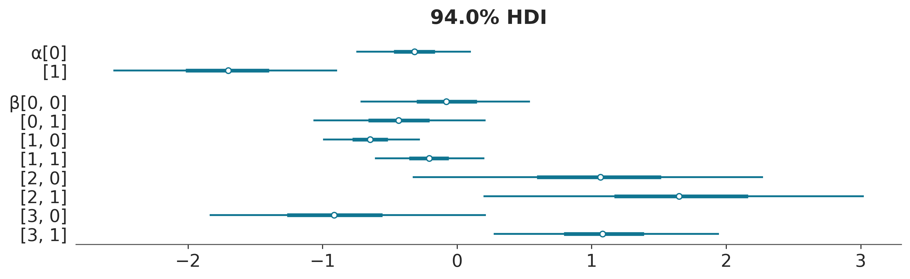
Linear discriminant analysis (LDA)
Hasta ahora hemos discutido la regresión logística y algunas extensiones de la misma. En todos estos casos, calculamos $p(y x) $, es decir, la probabilidad que una clase \(y\) teniendo como dato una o más variables \(x\), luego usamos un umbral o límite para convertir la probabilidad computada en un límite discreto lo que nos permite asignar clases.
Este enfoque no es único. Una alternativa es modelar primero \(p(x \mid y)\). No vamos a entrar en mucho detalle aquí sobre este tipo de modelos para clasificación, pero vamos a ver un ejemplo que ilustra la idea central de este tipo de modelo. Lo haremos para dos clases y una sola variable, exactamente como el primer modelo que construimos en este capítulo, es más usaremos los mismos datos.
En el siguiente código se puede ver que ahora el límite de decisión se define como el promedio entre las medias de las Gaussianas. Este modelo es equivalente a lo que se conoce como análisis discriminante lineal (Linear Discriminar Analysis).
with pm.Model() as modelo_lda:
μ = pm.Normal('μ', mu=0, sigma=10, shape=2)
σ = pm.HalfNormal('σ', 10)
setosa = pm.Normal('setosa', mu=μ[0], sigma=σ, observed=x_0[:50])
versicolor = pm.Normal('versicolor', mu=μ[1], sigma=σ, observed=x_0[50:])
bd = pm.Deterministic('bd', (μ[0] + μ[1]) / 2)
idata_lda = pm.sample()Auto-assigning NUTS sampler...
Initializing NUTS using jitter+adapt_diag...
Multiprocess sampling (4 chains in 4 jobs)
NUTS: [μ, σ]
100.00% [8000/8000 00:01<00:00 Sampling 4 chains, 0 divergences]
Sampling 4 chains for 1_000 tune and 1_000 draw iterations (4_000 + 4_000 draws total) took 1 seconds.Ahora vamos a generar una figura que muestra las dos clases (setosa = 0 yversicolor = 1) contra los valores de la longitud del sépalo, y también el límite de decisión como una línea turquesa y el intervalo del 94% de HDI como una banda turquesa semitransparente.
plt.axvline(idata_lda.posterior['bd'].mean(("chain", "draw")), ymax=1, color='C1')
bd_hdi = az.hdi(idata_lda.posterior)['bd'].values
plt.fill_betweenx([0, 1], bd_hdi[0], bd_hdi[1], color='C1', alpha=0.5)
plt.plot(x_0, np.random.normal(y_0, 0.02), '.', color='k')
plt.ylabel('θ', rotation=0)
plt.xlabel('sepal_length');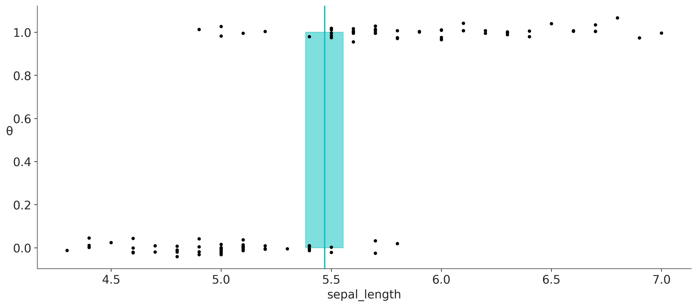
Como habrá notado, la figura 4.9 es bastante similar a la figura 4.4. Verifique también los valores de la decisión de límite en el siguiente summary:
az.summary(idata_lda)| mean | sd | hdi_3% | hdi_97% | mcse_mean | mcse_sd | ess_bulk | ess_tail | r_hat | |
|---|---|---|---|---|---|---|---|---|---|
| μ[0] | 5.005 | 0.064 | 4.889 | 5.133 | 0.001 | 0.001 | 6084.0 | 3292.0 | 1.0 |
| μ[1] | 5.936 | 0.064 | 5.821 | 6.059 | 0.001 | 0.001 | 5652.0 | 3249.0 | 1.0 |
| σ | 0.447 | 0.032 | 0.392 | 0.510 | 0.000 | 0.000 | 5429.0 | 3241.0 | 1.0 |
| bd | 5.471 | 0.046 | 5.384 | 5.554 | 0.001 | 0.000 | 5770.0 | 2905.0 | 1.0 |
Tanto el modelo LDA como la regresión logística proporcionan resultados similares. El modelo discriminante lineal puede extenderse a más de una característica al modelar las clases como Gaussianas multivariadas. Además, es posible relajar el supuesto de que las clases comparten una varianza común (o covarianza). Esto conduce a un modelo conocido como análisis discriminante cuadrático (QDA).
En general, los modelos LDA o QDA funcionarán mejor que una regresión logística cuando las características que estamos usando estén más o menos distribuidas como Gaussianas y la regresión logística funcionará mejor en el caso contrario. Una ventaja de modelos como LDA y QDA (o generalizaciones de esta idea) es que puede ser más fácil o más natural incorporar información previa.
Es importante tener en cuenta que los límites de decisión de LDA y QDA pueden ser calculados analíticamente y, por lo tanto, por lo general se calculan de esa manera. Para usar un LDA para dos clases y una característica, solo necesitamos calcular la media de cada distribución y promediar esos dos valores, y obtenemos la decisión de los límites. En el modelo anterior, lo hicimos, pero con un giro Bayesiano. Estimamos los parámetros de las dos Gaussianas y luego insertamos esas estimaciones en una fórmula predefinida.
Regresión de Poisson
Otro modelo lineal generalizado muy popular es la regresión de Poisson. Este modelo asume que los datos se distribuyen de acuerdo con la distribución de Poisson.
Un escenario en el que la distribución de Poisson es útil es cuando se analizan cosas, como la descomposición de un núcleo radioactivo, el número de hijos por pareja o el número de seguidores de Twitter. Lo que todos estos ejemplos tienen en común es que usualmente los modelamos usando números discretos no negativos {0, 1, 2, 3 …}. Este tipo de variable recibe el nombre de datos de conteo (count data).
La distribución de Poisson
Imagina que estamos contando la cantidad de autos rojos que pasan por una avenida por hora. Podríamos usar la distribución de Poisson para describir estos datos. La distribución de Poisson se utiliza generalmente para describir la probabilidad que ocurra un número determinado de eventos independientes entre si en un intervalo de tiempo o espacio fijo. Esta distribución discreta se parametriza utilizando solo un valor, \(\mu\) (la tasa, también comúnmente representada con la letra griega \(\lambda\)). \(\mu\) corresponde a la media y también a la varianza de la distribución. La función de probabilidad de masa de la distribución de Poisson es:
\[ f(x \mid \mu) = \frac {e^{-\mu}\mu^x} {x!} \tag{4.17}\]
dónde: * \(\mu\) es el número promedio de eventos por unidad de tiempo / espacio * \(x\) es un valor entero positivo 0, 1, 2, … * \(x!\) es el factorial de x, k! = k × (k - 1) × (k - 2) × … × 2 × 1
En la siguiente gráfica, podemos ver algunos ejemplos de la familia de distribución de Poisson, para diferentes valores de \(\mu\).
mu_params = [0.5, 1.5, 3, 8]
x = np.arange(0, max(mu_params) * 3)
for mu in mu_params:
y = pz.Poisson(mu).rv_frozen.pmf(x)
plt.plot(x, y, 'o-', label=f'μ = {mu:3.1f}')
plt.legend()
plt.xlabel('x')
plt.ylabel('f(x)');
Es importante notar que \(\mu\) puede ser un flotante, pero la distribución modela probabilidad de un número discreto de eventos. En la figura 4.10, los puntos representan los valores de la distribución, mientras que las líneas continuas son una ayuda visual que nos ayuda a comprender fácilmente la forma de la distribución. Recuerde, la distribución de Poisson es una distribución discreta.
La distribución de Poisson puede verse como un caso especial de la distribución binomial cuando la cantidad de intentos \(n\) es muy grande pero la probabilidad de éxito \(p\) es muy baja. Sin entrar en detalles matemáticos, tratemos de aclarar la afirmación anterior. Siguiendo el ejemplo del auto, podemos afirmar que o vemos el auto rojo o no, por lo que podemos usar una distribución binomial. En ese caso tenemos:
\[ x \sim Bin(n, p) \tag{4.18}\]
Entonces, la media de la distribución binomial es:
\[\mathbf{E}[x] = np \tag{4.19} \]
Y la varianza viene dada por:
\[ \mathbf {V}[x] = np (1 - p) \tag{4.20}\]
Pero tenga en cuenta que incluso si se encuentra en una avenida muy transitada, la posibilidad de ver un auto rojo en comparación con el número total de automóviles en una ciudad es muy pequeño y, por lo tanto, tenemos:
\[n >> p \Rightarrow np \simeq np (1-p) \tag{4.21}\]
Entonces, podemos hacer la siguiente aproximación:
\[\mathbf {V}[x] = np \tag{4.22}\]
Ahora la media y la varianza están representadas por el mismo número y podemos declarar con confianza que nuestra variable se distribuye como una distribución de Poisson:
\[x \sim Poisson(\mu = np) \tag{4.23}\]
El modelo de Poisson inflado de ceros
Al contar cosas, una posibilidad es no contar esas cosas, es decir obtener cero. El número cero puede ocurrir generalmente por muchas razones; obtuvimos un cero porque estábamos contando autos rojos y un auto rojo no pasó por la avenida o porque no logramos verlo (tal vez no vimos pasar un diminuto auto rojo detrás de un gran camión). Entonces, si usamos una distribución de Poisson, notaremos, por ejemplo, cuando realizamos una verificación predictiva posterior, que el modelo generó menos ceros en comparación con los datos.
¿Cómo arreglamos eso? Podemos tratar de abordar la causa exacta por la cual nuestro modelo predice menos ceros de los observados e incluir ese factor en el modelo. Sin embargo, suele ser el caso, que es suficiente y más fácil para nuestro propósito, asumir que simplemente tenemos una mezcla de dos procesos:
- Uno modelado por una distribución de Poisson con probabilidad \(\psi\)
- Otra persona que da ceros adicionales con probabilidad \(1 - \psi\).
Esto se conoce como modelo Poisson inflado de ceros (ZeroInflatedPoisson). En algunos textos, encontrarás que \(\psi\) se usa para representar los ceros extra y \(1-\psi\) la probabilidad de Poisson.
Básicamente una distribución ZIP nos dice que:
\[p(y_j = 0) = 1 - \psi + (\psi) e^{-\mu} \tag{4.24}\]
\[p(y_j = k_i ) = \psi \frac{\mu^x_i e^{-\mu}}{x_i!} \tag{4.25}\]
Donde \(1-\psi\) es la probabilidad de ceros adicionales. Podríamos implementar fácilmente estas ecuaciones en un modelo PyMC. Sin embargo, podemos hacer algo aún más fácil y usar la distribución ZIP de PyMC.
#np.random.seed(42)
n = 100
θ_real = 2.5
ψ = 0.1
# Simulate some data
counts = np.array([(np.random.random() > (1-ψ)) * np.random.poisson(θ_real)
for i in range(n)])with pm.Model() as ZIP:
ψ = pm.Beta('ψ', 1., 1.)
θ = pm.Gamma('θ', 2., 0.1)
y = pm.ZeroInflatedPoisson('y', ψ, θ, observed=counts)
idata = pm.sample(1000)Auto-assigning NUTS sampler...
Initializing NUTS using jitter+adapt_diag...
Multiprocess sampling (4 chains in 4 jobs)
NUTS: [ψ, θ]
100.00% [8000/8000 00:01<00:00 Sampling 4 chains, 0 divergences]
Sampling 4 chains for 1_000 tune and 1_000 draw iterations (4_000 + 4_000 draws total) took 2 seconds.az.plot_trace(idata);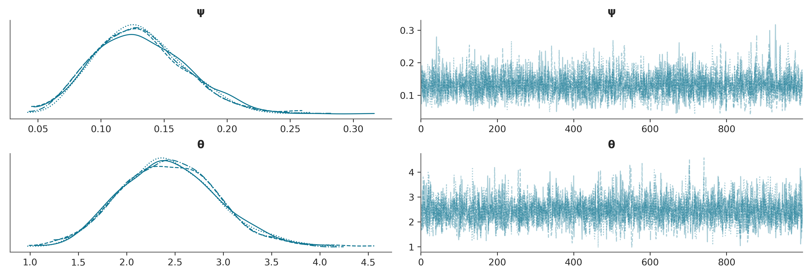
az.summary(idata)| mean | sd | hdi_3% | hdi_97% | mcse_mean | mcse_sd | ess_bulk | ess_tail | r_hat | |
|---|---|---|---|---|---|---|---|---|---|
| ψ | 0.131 | 0.037 | 0.069 | 0.202 | 0.001 | 0.000 | 3599.0 | 2480.0 | 1.0 |
| θ | 2.445 | 0.506 | 1.473 | 3.369 | 0.008 | 0.006 | 3714.0 | 2602.0 | 1.0 |
Regresión de Poisson y regresión ZIP
El modelo ZIP puede parecer un poco aburrido, pero a veces necesitamos estimar distribuciones simples como esta u otra como las distribuciones de Poisson o Gaussianas. Además, podemos usar las distribuciones Poisson o ZIP como parte de un modelo lineal. Como vimos con la regresión logística (y softmax) podemos usar una función de enlace inverso para transformar el resultado de un modelo lineal en una variable adecuada para ser utilizada con otra distribución que no sea la normal. En la siguiente figura, vemos una posible implementación de una regresión ZIP. La regresión de Poisson será similar, pero sin la necesidad de incluir \(\phi\) ya que no modelaremos un exceso de ceros. Observe que ahora usamos la función exponencial como la función de enlace inverso. Esta elección garantiza que los valores devueltos por el modelo lineal sean positivos.
Para ejemplificar la implementación de un modelo de regresión ZIP, vamos a trabajar con un conjunto de datos tomado del Instituto de Investigación y Educación Digital.
El problema es el siguiente: trabajamos en la administración de un parque y queremos mejorar la experiencia de los visitantes. Por lo tanto, decidimos realizar una breve encuesta a 250 grupos que visitan el parque. Parte de los datos que recopilamos (a nivel de grupo) consiste en:
- La cantidad de peces que capturaron (contar)
- Cuántos niños había en el grupo (niño)
- Ya sea que hayan traído o no una casa-rodante o “caravana” al parque (camper).
Usando estos datos, vamos a construir un modelo que predice el número de peces capturados en función de las variables niño y caravana. Podemos usar Pandas para cargar los datos:
fish_data = pd.read_csv('datos/fish.csv')Lo dejo como un ejercicio para que explore el conjunto de datos utilizando gráficos y / o una función de Pandas, como describe(). Por ahora vamos a continuar traduciendo el diagrama de Kruschke anterior a PyMC3:
with pm.Model() as ZIP_reg:
ψ = pm.Beta('ψ', 1, 1)
α = pm.Normal('α', 0, 10)
β = pm.Normal('β', 0, 10, shape=2)
θ = pm.math.exp(α + β[0] * fish_data['child'] + β[1] * fish_data['camper'])
yl = pm.ZeroInflatedPoisson('yl', ψ, θ, observed=fish_data['count'])
idata_ZIP_reg = pm.sample()
az.plot_trace(idata_ZIP_reg);Auto-assigning NUTS sampler...
Initializing NUTS using jitter+adapt_diag...
Multiprocess sampling (4 chains in 4 jobs)
NUTS: [ψ, α, β]
100.00% [8000/8000 00:03<00:00 Sampling 4 chains, 0 divergences]
Sampling 4 chains for 1_000 tune and 1_000 draw iterations (4_000 + 4_000 draws total) took 4 seconds.
Para entender mejor los resultados de nuestra inferencia, hagamos una gráfica.
children = [0, 1, 2, 3, 4]
fish_count_pred_0 = []
fish_count_pred_1 = []
post_ZIP_reg = az.extract(idata_ZIP_reg)
for n in children:
without_camper = post_ZIP_reg['α'] + post_ZIP_reg['β'].sel({"β_dim_0":0}) * n
with_camper = without_camper + post_ZIP_reg['β'].sel({"β_dim_0":1})
fish_count_pred_0.append(np.exp(without_camper))
fish_count_pred_1.append(np.exp(with_camper))
plt.plot(children, fish_count_pred_0, 'C0.', alpha=0.01)
plt.plot(children, fish_count_pred_1, 'C1.', alpha=0.01)
plt.xticks(children);
plt.xlabel('Number of children')
plt.ylabel('Fish caught')
plt.plot([], 'C0o', label='without camper')
plt.plot([], 'C1o', label='with camper')
plt.legend();
Regresión por cuantiles
En los ejemplos anteriores nos focalizamos en usar un modelo lineal para estimar la media de la variable respuesta, condicionada a una o más covariables. Quizá el caso más común sea usar la distribución Normal. Pero aprendimos que podemos aplicar la misma idea cambiando la distribución por otras como la Poisson, binomial, etc, según nuestras necesidades.
La regresión por cuantiles consiste en utilizar un modelo lineal para estimar un cuantil. Cuando el cuantil a estimar es la mediana, la motivación suele ser la necesidad de una regresión robusta. En ese caso la regresión por cuantiles cumpliría una función similar al modelo robusto donde reemplazamos la Gaussiana por una distribución t de Student. Otras veces la motivación surge del interés en modelar relaciones entre variables cuando no hay relación entre las medias de dichas variables, o cuando esta es muy debil. Una disciplina donde las regresiones por cuantiles son frecuentes es la ecología. Esto se debe posiblemente, a que la existencia de complejas interacciones entre variables, donde el efecto de una variable sobre otra es distinto para distintos rangos de la variable.
x = np.linspace(-6, 6, 2000)
quantiles = np.array([0.2, 0.5, 0.8])
kappas = (quantiles/(1-quantiles))**0.5
for q, m in zip(quantiles, [0, 0, -1]):
κ = (q/(1-q))**0.5
plt.plot(x, stats.laplace_asymmetric(κ, m, 1).pdf(x), label=f"q={q:}, μ={m}, σ=1")
plt.yticks([]);
plt.legend();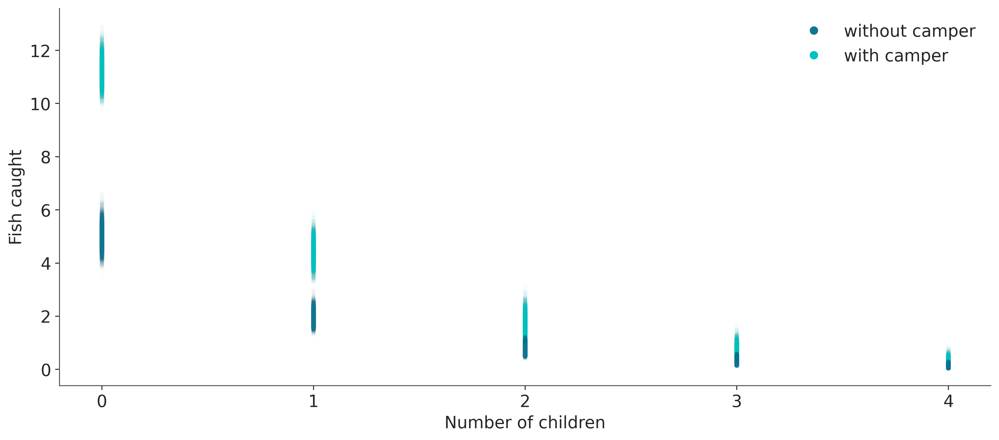
quantiles = np.array([0.05, 0.5, 0.95])
κ = (quantiles/(1-quantiles))**0.5
y_con = np.stack([data.Longitud.values]* 3).T
x_con = np.stack([data.Meses.values]* 3).Twith pm.Model() as model_q:
α = pm.Normal('α', 50, 3, shape=3)
β = pm.Normal('β', 0, 5, shape=3)
σ = pm.HalfNormal('σ', 5)
μ = pm.Deterministic('μ', α + β * x_con**0.5)
y_pred = pm.AsymmetricLaplace('y_pred', κ, μ, σ, observed=y_con)
idata_q = pm.sample()Auto-assigning NUTS sampler...
Initializing NUTS using jitter+adapt_diag...
Multiprocess sampling (4 chains in 4 jobs)
NUTS: [α, β, σ]
100.00% [8000/8000 00:11<00:00 Sampling 4 chains, 0 divergences]
Sampling 4 chains for 1_000 tune and 1_000 draw iterations (4_000 + 4_000 draws total) took 11 seconds.az.summary(idata_q, var_names="~μ")| mean | sd | hdi_3% | hdi_97% | mcse_mean | mcse_sd | ess_bulk | ess_tail | r_hat | |
|---|---|---|---|---|---|---|---|---|---|
| α[0] | 45.402 | 0.230 | 44.963 | 45.833 | 0.006 | 0.004 | 1727.0 | 1965.0 | 1.0 |
| α[1] | 47.954 | 0.229 | 47.504 | 48.360 | 0.005 | 0.004 | 1774.0 | 1965.0 | 1.0 |
| α[2] | 52.390 | 0.185 | 52.092 | 52.763 | 0.005 | 0.003 | 1557.0 | 1939.0 | 1.0 |
| β[0] | 6.658 | 0.082 | 6.517 | 6.817 | 0.002 | 0.001 | 1713.0 | 2111.0 | 1.0 |
| β[1] | 7.895 | 0.078 | 7.739 | 8.035 | 0.002 | 0.001 | 1706.0 | 1849.0 | 1.0 |
| β[2] | 8.825 | 0.059 | 8.714 | 8.942 | 0.002 | 0.001 | 1530.0 | 1718.0 | 1.0 |
| σ | 0.548 | 0.011 | 0.528 | 0.568 | 0.000 | 0.000 | 2661.0 | 2451.0 | 1.0 |
plt.plot(data.Meses, data.Longitud, "k.")
for idx, label in enumerate(("q=0.1", "q=0.5", "q=0.9")):
plt.plot(data.Meses.values, idata_q.posterior["μ"].mean(("chain", "draw"))[:,idx],
label=label, lw=3);
plt.legend();
with pm.Model() as model_n:
α = pm.Normal('α', 50, 3)
β = pm.Normal('β', 0, 5)
σ = pm.HalfNormal('σ', 5)
μ = pm.Deterministic('μ', α + β * data.Meses.values**0.5)
y_pred = pm.Normal('y_pred', μ, σ, observed=data.Longitud.values)
idata_n = pm.sample()Auto-assigning NUTS sampler...
Initializing NUTS using jitter+adapt_diag...
Multiprocess sampling (4 chains in 4 jobs)
NUTS: [α, β, σ]
100.00% [8000/8000 00:03<00:00 Sampling 4 chains, 0 divergences]
Sampling 4 chains for 1_000 tune and 1_000 draw iterations (4_000 + 4_000 draws total) took 3 seconds.plt.plot(data.Meses, data.Longitud, ".", color="0.8")
for idx, label in enumerate([f"{q=:}" for q in quantiles]):
plt.plot(data.Meses.values, idata_q.posterior["μ"].mean(("chain", "draw"))[:,idx],
label=label);
plt.legend();
up = (idata_n.posterior["μ"] + idata_n.posterior["σ"]*1.65).mean(("chain", "draw"))
down = (idata_n.posterior["μ"] - idata_n.posterior["σ"]*1.65).mean(("chain", "draw"))
plt.plot(data.Meses.values, down, "C0", label="μ - 1.65σ", ls="--");
plt.plot(data.Meses.values, idata_n.posterior["μ"].mean(("chain", "draw")), "C1", label="μ",ls="--");
plt.plot(data.Meses.values, up, "C2", label="μ + 1.65σ", ls="--");
plt.legend();
Resumen
Ejercicios
Es conocido que para muchas especies el peso no escala con la altura/longitud, pero si lo hace con el logaritmo de peso. Use esa información para ajustar el conjunto de datos
howell(sin distinción por edad). Repita el ajuste usando un polinomio de grado 2. Explique y compare ambos resultados.Vuelva a correr el
modelo_0pero esta vez usando las variablespetal_lengthypetal_width¿En que difieren los resultados? ¿Cuán ancho o angosto es el intervalo HDI 94%?Repita el ejercicio 1, esta vez usando una distribución t de Student como prior ligeramente informativo. Pruebe con distintos valores de \(\nu\).
Use un modelo lineal (como los vistos en el capítulo anterior) para clasificar setosa o versicolor en función de
sepal_length. ¿Cuán útil es este modelo comparado con una regresión logística?En la sección Interpretando los coeficientes de una regresion logística vimos el efecto sobre el
log_oddsde cambiar la variablesepal_lengthen 1 unidad. Usando la figura 4.6 corrobore que el valor obtenido paralog_odds_versicolor_ise corresponde con el valor deprobability_versicolor_i. Haga lo mismo paralog_odds_versicolor_fyprobability_versicolor_f. Si solo sabemos que el valor delog_odds_versicolores negativo que podemos decir de la probabilidad de versicolor, use la figura 4.6 como guía ¿Es este resultado evidente de la definición de log-odds?Para
modelo_1verifica cuanto cambian el valor de log-odd al incrementarsepal_leghtde 5.5 a 6.5. ¿Cúal es el cambio en valores de probabilidad? ¿Cuál es el cambio en términos de log-odds y probabilidad al pasar de 4.5 a 5.5?En el ejemplo de clases desbalanceadas cambie
df = df[45:]pordf = df[22:78]. Esto dejará más o menos el mismo número de datos, pero con las clases balanceadas. Compare con los resultados previos. ¿Cuál caso es más parecido a usar el conjunto de datos completo?Suponga que en vez de usar una regresión softmax usamos un modelo lineal simple codificando \(\text{setosa}=0\), \(\text{versicolor}=1\) y \(\text{virginica}=1\). Bajo el modelo lineal simple que pasaría si cambiáramos el orden del código.
Compara los likelihoods para el
modelo_0y para elmodelo_lda. Usa la funciónpm.sample_posterior_predictivepara generar datos a partir de estos dos modelos. ¿En que difirien los datos predichos para ambos modelos?Extienda el modelo
ZIP_regpara incluir la variablepersons. Usa esta variable para modelar el número de ceros extra. Deberás obtener un modelo que incluya dos modelos lineales, uno que conecte las variableschildrenycampera la tasa de Poisson y otro que conecte el número de personas con la variable \(\psi\). Presta atención si es necesario usar una función inversa de enlace.Use los datos empleados en el ejemplo de la regresión logística robusta con un modelo de regresión logística simple. ¿Cuál es el efecto de los outliers? Pruebe agregando o eliminado outliers.